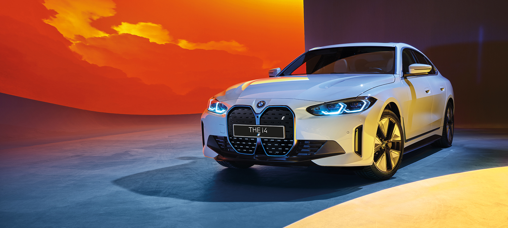
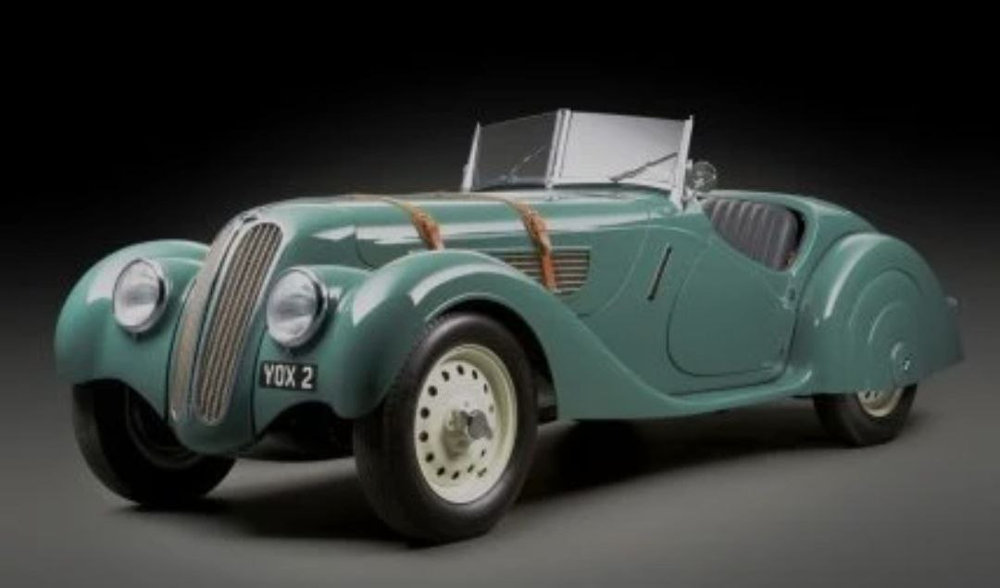

BMW.com

Компания БМВ имет много различных машын:
Первый автомобиль BMW сошел
BMW 1500
конвейера в 1929 году - это была малолитражная модель, выпускавшаяся по лицензии британской Austin Motor
Company. BMW Dixi 3/15 PS был похож на английский Austin 7, чрезвычайно популярным в европейских странах.
Автомобиль оснащался 20-сильным мотором и мог развить скорость до 80 км/ч.

самая последнья модель БМВ
M серия от M GmbH всегда была верным способом определения подлинных спортивных автомобилей. Нынешние автомобили
M продолжают расширять эту марку: BMW M135i xDrive, BMW M2 Coupé, BMW M4 Coupé, кабриолет BMW M4, BMW M5 с M
xDrive, а также автомобили BMW X3 M и BMW X4 M.